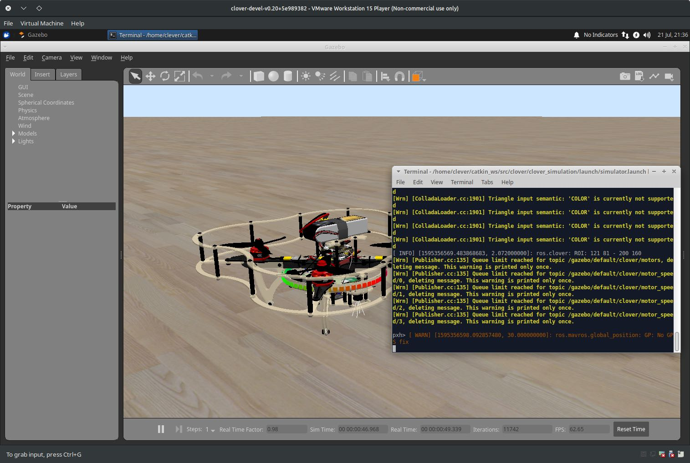
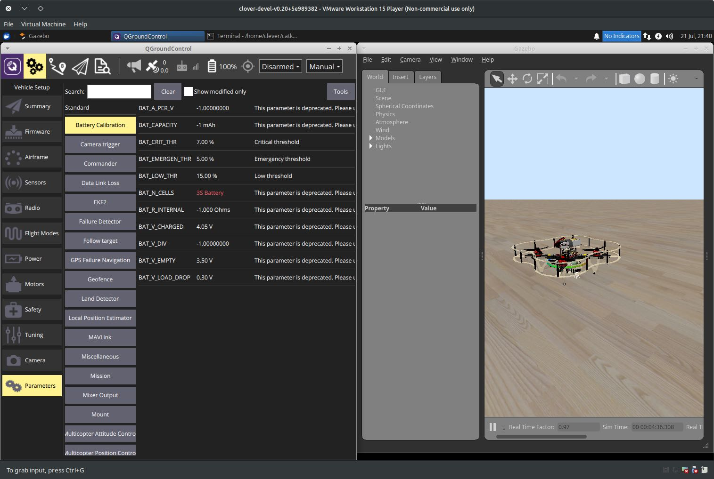
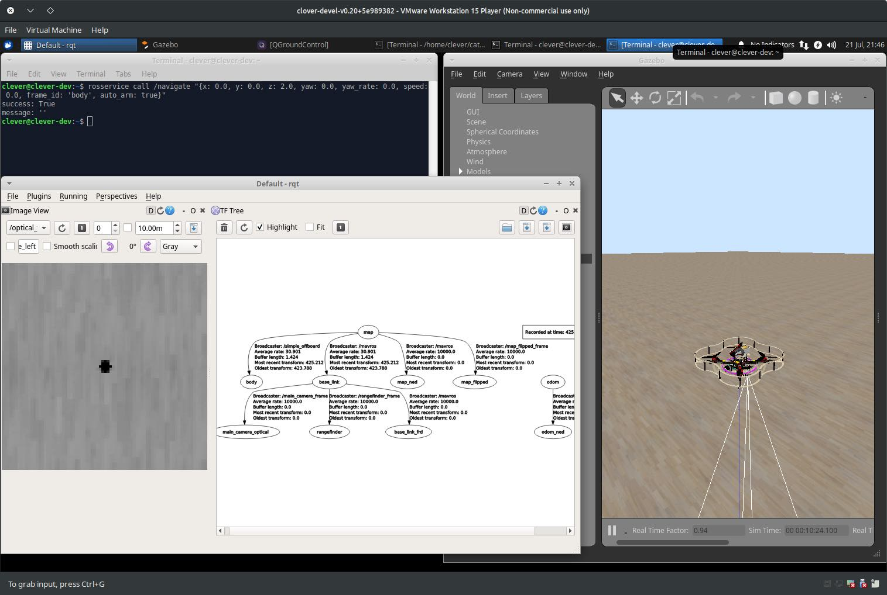
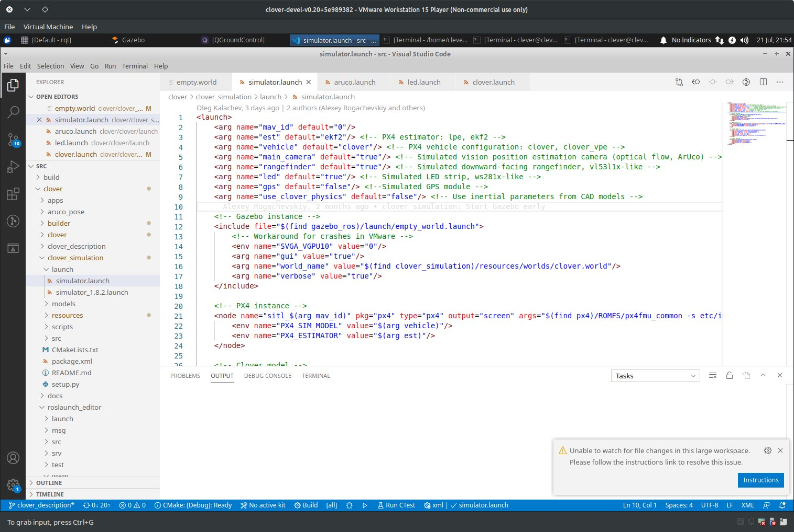

Using the simulator
The Clover simulation environment allows the user to test their code without any risk of equipment damage. Additionally, the virtual machine-based environment has additional (non-ROS) services that are present on a real drone, like Monkey web server.
Running the simulation
After setting up the simulation packages or importing and running the VM, you can use roslaunch to start Gazebo simulation:
# Be sure to activate your workspace first
source ~/catkin_ws/devel/setup.bash
roslaunch clover_simulation simulator.launch
Alternatively, if you are using the VM, just double-click on the
Gazebo PX4icon on the desktop.
This will launch Gazebo server and client, the PX4 SITL binary and Clover nodes. The terminal in which the command was run will display diagnostic messages from the nodes and PX4, and will accept input for the PX4 command interpreter:

You can use QGroundControl to configure the simulated drone parameters, plan missions (if GPS is simulated) and control the drone using a joystick:

You can also use our simplified OFFBOARD control to control the drone, and traditional ROS GUI utilities like rviz and rqt to analyze the drone state:

Configuring the simulation
The simulation can be configured by passing additional arguments to the roslaunch command or by changing the ~/catkin_ws/src/clover/clover_simulation/launch/simulator.launch file. Nodes that provide ArUco detection, optical flow calculation and other services can be configured by changing their respective .launch files, just like on a real drone.

Enabling GPS
In order to enable GPS sensor, set the gps argument in simulator.launch to true:
<arg name="gps" value="true"/>
Camera
If you don't need the camera when flying using GPS, it may be disabled in simulator.launch file:
<arg name="main_camera" default="false"/>
Another sensors
If you wish to add additional sensors or change their placement, you will have to change the drone description. The description file is located in ~/catkin_ws/src/clover/clover_description/urdf/clover/clover4.xacro, and uses the xacro format to build URDF description.
Changing the default world
Gazebo plugins for the drone currently require the real_time_update_rate world parameter to be 250, and max_step_size to be 0.004. Using other values will not work. Consider using ~/catkin_ws/src/clover/clover_simulation/resources/worlds/clover.world as a base.
Performance suggestions
Gazebo simulation environment is resource-intensive, and requires a fast CPU and a decent GPU for real-time execution. However, the simulation may still work on less powerful systems at slower-than-realtime rate. Below are some suggestions for running Gazebo on hardware that does not allow realtime execution.
Use throttling_camera plugin
By default, Gazebo does not slow simulation down for visual sensors. This can be remedied by using the throttling_camera plugin from clover_simulation.
You can enable it for the drone by changing the maintain_camera_rate argument to true in clover_description/launch/spawn_drone.launch:
<!-- Slow simulation down to maintain camera rate -->
<arg name="maintain_camera_rate" default="true"/>
The plugin will collect publishing rate statistics and slow the simulation down so that the camera publishing rate is no less than requested. However, large slowdowns may negatively affect non-ROS software that connects to PX4. If your simulation is being slowed down to values lower than 0.5 of realtime, consider using the next suggestion.
Set simulation speed
Since v1.9 the PX4 SITL setup supports setting the simulation speed by setting the PX4_SIM_SPEED_FACTOR environment variable. Its value is picked up by PX4 startup scripts, which in turn reconfigure it to expect a certain speedup/slowdown.
You should set its value to the actual real time factor that you get with throttling_camera. The real time factor may be found in the Gazebo GUI window at the bottom:
In this example you should set PX4_SIM_SPEED_FACTOR to 0.42 when launching the simulation:
PX4_SIM_SPEED_FACTOR=0.42 roslaunch clover_simulation simulator.launch
If you are using the VM, it may be convenient to put the value in the Gazebo desktop shortcut. Right-click on the Gazebo icon, select "Properties..." and add
PX4_SIM_SPEED_FACTOR=0.42to the Command field as follows:

Allocate more resources to the VM
The virtual machine may benefit from several CPU cores, especially if the cores are not very performant. In our tests, a four-core machine with only a single core allocated to the VM was unable to run the simulation, with constant interface freezes and dropped ROS messages. The same machine with all four cores available to the VM was able to run the simulation at 0.25 real-time speed.
Do note that you should not allocate more resources than you have on your host hardware.